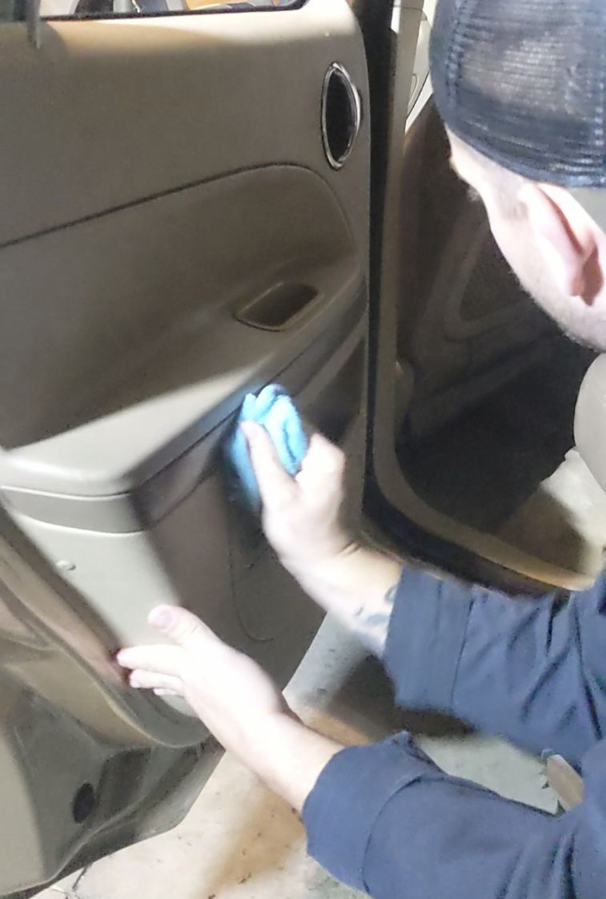

Full Interior Detailing


.jpeg)
1. Prepare the Car
Remove Personal Items: Start by removing any personal belongings, trash, and debris from the interior.
Adjust Seats & Steering Wheel: Move the seats forward and backward to access all areas of the floor and under the seats. Lower or adjust the steering wheel for better access.
2. Vacuum the Interior
Seats & Carpets: Begin vacuuming the seats and carpets, working your way through the vehicle. Make sure to get into the seams and crevices where dirt and debris accumulate.
Floor Mats: Remove and vacuum the floor mats separately, including both sides. For deep cleaning, consider using a mat cleaner or a power washer for rubber mats. Under Seats: Don't forget to vacuum under the seats. Use attachments like a crevice tool for tighter spots.
3. Clean the Dashboard & Center Console
Dusting: Use a microfiber cloth or duster to remove any dust from the dashboard, center console, and other flat surfaces.
Dashboard Cleaning: Apply a suitable dashboard cleaner or all-purpose cleaner to a microfiber cloth (never spray directly onto the surface). Wipe down the dashboard, vents, and any hard plastic surfaces, ensuring you get into the corners and seams.
Buttons & Knobs: Use a soft brush or compressed air to clean around buttons, knobs, and other hard-to-reach spots.
4. Clean the Upholstery and
Fabric: If your seats are cloth, use a fabric cleaner or upholstery shampoo. Apply the cleaner to the seats and gently scrub with a soft brush. Use a microfiber cloth to blot excess moisture, and vacuum any loosened dirt.
Leather Upholstery: For leather seats, apply a leather cleaner and conditioner with a microfiber cloth. Use a soft brush to clean any seams or intricate areas, then wipe away excess cleaner. Follow up with a leather conditioner to keep the seats soft and protected.
5. Clean Door Panels and cup holders: Dust off the door panels and any armrests. Use an all-purpose cleaner to wipe down the panels, handles, and buttons, making sure to get in all the seams.
Detail the Cup Holders, cup holders often collect grime, so make sure to clean and wipe them down with a microfiber cloth. Use a brush to scrub any stubborn dirt or sticky residues.
6. Clean the Windows and Mirrors: Spray an automotive glass cleaner on the inside of the windows and use a microfiber cloth to wipe away any streaks or grime.
Mirrors: Clean the rearview mirror and side mirrors in the same way, ensuring they are free of smudges.
7. Clean & Condition the Steering Wheel and Gear Shift: Wipe the steering wheel with a cleaner appropriate for the material (leather or vinyl). For leather, condition it afterward to prevent cracking and fading.
Gear Shift: Clean around the gear shift area, ensuring no dust, dirt, or stains remain.
8. Deodorize the Interior,
Odor Removal: To remove any odors, use an odor eliminator spray or air freshener specifically designed for vehicles. Avoid using strong scents that may overwhelm the space.
Deodorizing the Air Vents: You can also use an air vent cleaner to freshen up the air flow system and get rid of musty smells from the HVAC.
9. Final Touches
Wipe All Surfaces: Give all surfaces one final wipe-down with a clean microfiber cloth.
Replace Floor Mats: Once everything is cleaned, place the floor mats back into the car.
Polish: If desired, you can use a plastic or vinyl polish on the dashboard and other surfaces to give them a glossy finish and added protection.
10. Inspect
Walk through the car one final time to inspect all areas for missed spots or streaks. Pay attention to the smallest details like crevices in the seats or vents.
Additional Tips
Use Safe Products: Always ensure the cleaning products you use are safe for your car's materials (leather, cloth, etc.). Harsh chemicals can damage surfaces.
Regular Maintenance: Regularly clean your car’s interior to prevent dirt buildup, which can make deep cleaning more difficult.
Don’t Overwet: When cleaning upholstery or carpets, avoid soaking them with too much liquid, as this can lead to mold or mildew.
Following these steps will ensure a thorough and professional-looking interior detail for your car. Happy detailing!
Contact Deeskey Customs and Detailing for all your detailing needs. Let us help you keep your ride looking its best!